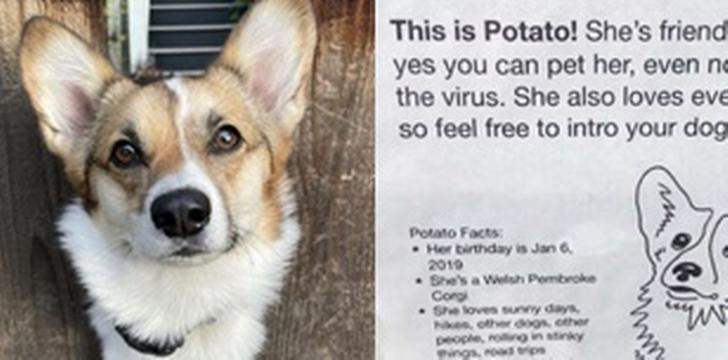
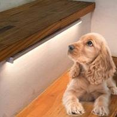

발로뉴스 >
[긴급]"지금 메인 작성하는 방법 도저히 감이 안잡혀.."
뉴스스탠드 >
구독한 언론사 -
전체언론사
| 한겨레 | 스포츠서울 | 데일리안 | 연합뉴스TV | 동아일보 | 아시아경제 |
| 미디어 | 미디어펜 | 나우뉴스 | TBC | news1 | 이로운넷 |
| Byline Network | YTN사이언스 | OBS | 독서신문 | MONEY | TV Report |
| Tdong | GameMeca | 맥스무비 | 동아사이언스 | SBSBiz | 스포츠경향 |
오늘 읽을만한 글
주제별로 분류된 다양한 글 모음
1,789
개의 글 |
관심주제 설정
| 책문화 | 부모i | 법률 | 패션뷰티 | 동물공감 | 디자인 | 중국 | FARM |

동물이 행복한 세상
줄을 서개! 우울했던 멈머가 무한 쓰담 받은 법
줄을 서개! 우울했던 멈머가 무한 쓰담 받은 법
코로나 블루라는 단어, 다들 익숙하시죠? 코로나 팬데믹 이후 바깥 외출이 힘들어지는 것은 물론 직업적으로 경제적으로 ...
심쿵 남의 새끼
사람을 엄마라 생각한 아깽이의 심쿰 행동 ❤
동물과 사람 이야기
학대한 사람을 7년만에 본 개... 눈물나는 재회 모습

동물공감 잇템
우리 아이 애착인형 세탁만 돌리면 끝? 아니죠!